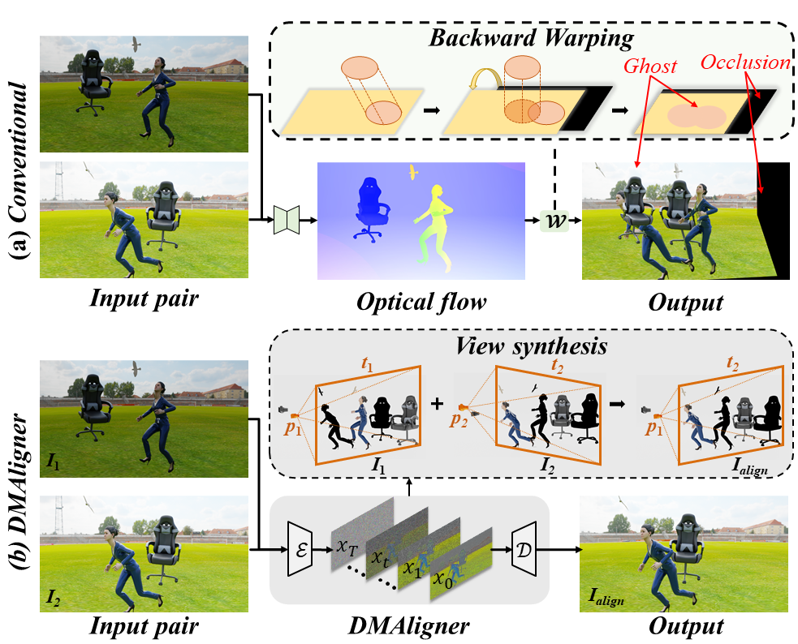
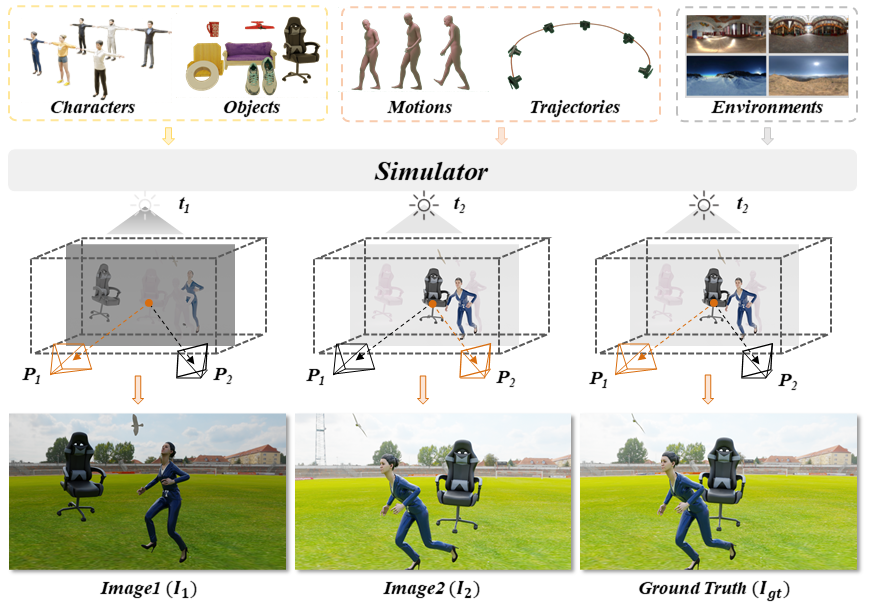
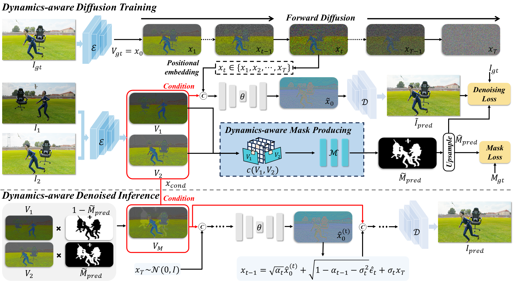

Image alignment is a fundamental task in computer vision with broad applications. Existing methods predominantly employ optical flow-based image warping. However, this technique is susceptible to common challenges such as occlusions and illumination variations, leading to degraded alignment visual quality and compromised accuracy in downstream tasks. We present DMAligner, a diffusion-based framework for image alignment through alignment-oriented view synthesis. DMAligner is crafted to tackle the challenges from a new perspective, employing a generation-based solution that avoids the problems associated with flow-based warping. We propose a Dynamics-aware Diffusion Training approach with a Dynamics-aware Mask Producing (DMP) module to adaptively distinguish dynamic foreground regions from static backgrounds. We also develop the DSIA dataset with 1,033 scenes and 30K+ image pairs tailored for image alignment. Extensive experiments demonstrate superiority on DSIA, Sintel, and DAVIS benchmarks.

(a) Conventional image alignment based on optical flow warping results in ghosting artifacts and occlusions. (b) Our DMAligner directly generates the complete alignment image via diffusion-based view synthesis.
The Dynamic Scene Image Alignment (DSIA) dataset is the first large-scale dataset specifically designed for image alignment. Built with Blender, it includes 1,033 indoor and outdoor scenes with over 30,000 image pairs at 960×540 resolution.

Overview of DSIA dataset generation. Characters, objects, and cameras move simultaneously to simulate real-world dynamics.

Overview of DMAligner. Our framework uses a generative diffusion approach for image alignment. The Dynamics-aware Mask Producing (DMP) module provides dynamic information essential for the Dynamics-aware Diffusion Training process.
Qualitative alignment results from DMAligner across diverse scenes. Each row shows the input image pair and the aligned prediction: